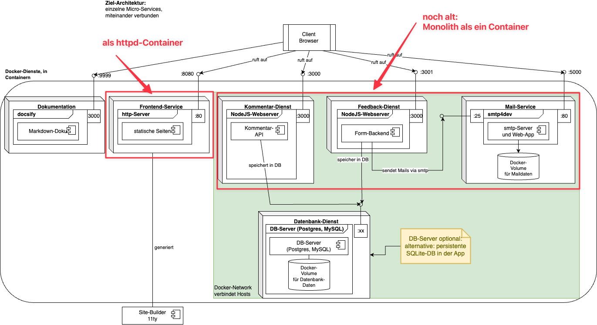
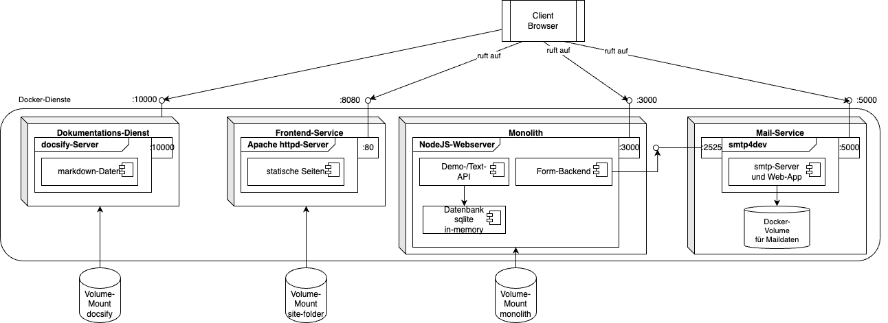
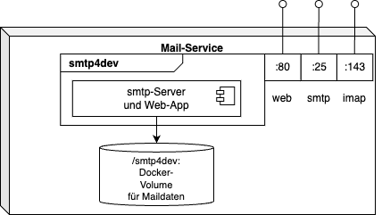

{% extends "../_base_template.html" %}
{% block title %}Lektion 5 - Container für die Entwicklung{% endblock %}

{% block sections %}
<section data-markdown>
<textarea data-template>
# <i class="fas fa-graduation-cap"></i> M347 - Container für Entwicklungsumgebung erstellen

## Heutiges Ziel

* Sie können mittels **Dockerfiles** Container für die Entwicklung der Applikation bauen
* Sie können Container mit den notwendigen Ressourcen (Bound Volumes, Ports) starten
* Sie wissen, was **Docker Volumes und Bound Volumes** sind, und wann Sie welche verwenden
* Sie können verschiedene Container-Dienste miteinander verbinden (Networking)
* Endziel: Folgende Dienste laufen als separate Container: 
  * Frontend (statische Webseiten) mit Feedback- und Api-Demo-HTML-Seiten
  * bestehender Monolith mit Feedback- und API-Backend 
  * Docsify-Dokumentation
  * (ev., je nach Fortschritt): Maildienst mit smtp4dev, verbunden mit Feedback-Dienst

</textarea>
</section>

<!-- ----------------------------------------------------------------------------- -->
<section data-markdown>
<textarea data-template>
# <i class="fas fa-graduation-cap"></i> Auf dem Weg zur Microservice-Architektur

Unsere jetzige Architektur sieht folgendermassen aus:

<div class="d-flex gap-10">

<div class="flex-basis-0 flex-grow-1">

Wir haben bereits folgende Dienste als eigenen Container (Ziel von heute):"

* Frontend (Webseite) mit Feedback- und Api-Demo-HTML-Seiten
* bestehender Monolith mit Feedback- und API-Backend 
* Docsify-Dokumentation

Im **Monolith-Code** sind nun noch Aufräumarbeiten zu erledigen: **Wir benötigen das Ausliefern der
Frontend-Seiten im Monolith nicht mehr!**

</div>
</div>

</textarea>
</section>

<section data-markdown>
<textarea data-template>
# <i class="fas fa-graduation-cap"></i> Auf dem Weg zur Microservice-Architektur

Unser heutiges Ziel ist folgender End-Zustand:

Wir wollen dies an unserer Beispielapplikation Schritt-für-Schritt umsetzen. 

* **Frontend-Dienst:** eigener Container mit **Bound Volume** und Netzwerk-Port-Mapping
* **Monolith:** eigener Container mit **Bound Volume** und Netzwerk-Port-Mapping, befreit von Frontend-Code
* **Docsify-Dok:** eigenes Image ab Dockerfile, Container mit **Bound Volume** und Netzwerk-Port-Mapping
* **Mail-Service:** eigener Container mit **Managed Volume** und Verbindung zum Feedback-/Monolith-Dienst (nächstes Mal)



</textarea>
</section>

<section data-markdown>
<textarea data-template>
# <i class="fas fa-flask"></i> Umbau Fertigstellen - praktische Arbeit

In der Lektion setzen Sie die Architektur wie in der letzten Folie gezeigt fertig um:

* **Frontend-Dienst:** 
  * eigener Container vom `httpd`Image. Dokumentieren Sie die notwendigen Kommandos!
  *  **Bound Volume** mit statischen httpd-Dateien vom M293
  * **Netzwerk-Port-Mapping** auf z.B. Port 8080
* **Monolith:**
  * eigener Container vom `node:22`Image. Dokumentieren Sie die notwendigen Kommandos!
  *  **Bound Volume** mit Monolith-Code
  * **Netzwerk-Port-Mapping** auf Port 3000
  * **`server.js` bereinigt vom Frontend-Code** (siehe nächste Folie)
* **Docsify-Dokumentation:**
  * Eigenes Image mittels Dockerfile erstellt
  * Daraus eigenes Image und Container gebaut -- Dokumentieren Sie die Kommandos!
  *  **Bound Volume** mit Markdown-Dokumentation
  * **Netzwerk-Port-Mapping** auf z.B. Port 10000
* (optional, für nächstes Mal): **Mail-Service:** eigener Container mit **Managed Volume** und Verbindung zum Feedback-/Monolith-Dienst (nächstes Mal)


<i class="far fa-hand-point-right"></i> Dokumentieren Sie die notwendigen Schritte und Kommandos!<br>

</textarea>
</section>


<section data-markdown>
<textarea data-template>
# <i class="fas fa-graduation-cap"></i> Frontend mittels Apache httpd

Nochmals zur Erinnerung: Der Apache httpd-Dienst ist ein einfacher Webserver, der statische Seiten ausliefern kann.<br>
Praktischerweise gibt es diesen bereits als [Docker image auf dem Hub](https://hub.docker.com/_/httpd)


**<i class="far fa-hand-point-right"></i> Das bedeutet, dass wir in unserem Monolithen den Code für die Frontend-Auslieferung nun entfernen können!**

**<i class="far fa-hand-point-right"></i> Aufgabe:**

Untersuchen Sie den Monolith-Code (**`server.js`**), und entfernen Sie den Code, der für die Auslieferung der statischen HTML-Seiten zuständig ist!
Versuchen Sie, den Code selbständig zu verstehen. Es ist eine kleine NodesJS / [ExpressJS](https://expressjs.com/)-Applikation, die Sie gut versehen sollten.

Ziel: Ihr Monolith läuft weiterhin, und beinhaltet nun **nur noch** den notwwendigen Code für den Feedback-Dienst und die API-Demo.

</textarea>
</section>


<section data-markdown>
<textarea data-template>
# <i class="fas fa-flask"></i> Umbau - Hints

Wir führen hier ein paar neue Konzepte ein:

- ein "**Bound Volume**" bindet ein (Host-)lokales Verzeichnis an ein Container-Verzeichnis:<br>
  Sie können so z.B. das lokale Verzeichnis `/pfad/zu/meiner/webseite` im Container ans Verzeichnis `/site` "binden"<br>
  Siehe <https://docs.docker.com/storage/volumes/>

- ein "**Port Mapping**" "verbindet" einen Host-TCP-Port mit einem Container-TCP-Port, sodass Netzwerk-Verkehr vom Host an den Container geleitet wird.
  Ansonsten wäre unsere Frontend-Webseite von aussen nicht erreichbar.<br>
  Siehe <https://docs.docker.com/engine/reference/commandline/run/#publish-or-expose-port--p---expose> und <https://docs.docker.com/engine/reference/commandline/port/> 

- Um einen Container beim Start in einem bestimmten "Working Directory" zu starten, benutzen Sie im Dockerfile die Anweisung "`WORKDIR`",<br>
  siehe: <https://docs.docker.com/engine/reference/builder/#workdir>. Dieses Konzept benötigen Sie für den httpd-Dienst nicht, nur für den nodejs-Monolithen.


## Warum "Bound Volume"?

Dieser Container dient dazu, unsere Frontend-Webseite zu entwickeln: Wir überreichen ihm den Ordner unserer Enwicklungs-Version der Webseite:
So können wir lokal in unserem gewohnten Code-Editor die Webseite editeren, und sie (vom Container ausgeliefert) testen.

Würden wir die Seiten in das Image hineinkopieren, müssten wir bei jeder (lokalen) Änderung der Seite das Image neu bauen - das wäre unpraktisch!
</textarea>
</section>

<section data-markdown>
<textarea data-template>
# <i class="fas fa-flask"></i> Umbau - Was haben wir erreicht?

**Haben Sie noch Fragen / Probleme beim Extrahieren?** - Wir schauen uns dies gemeinsam an.

Durch diesen Umbau haben wir nun folgendes erreicht:

* Wir haben einen eigenen Container, der sich nur um die Auslieferung des Frontends kümmert.

* Dadurch wird unser Frontend-Service **einfacher, schlanker**: Er macht nur noch "etwas", anstatt alles. Zudem brauchen wir nur noch einen simplen statischen Webserver, anstatt eine NodeJS-Applikation.

* Wir können den Frontend-Dienst nun separat entwickeln, starten, deployen.

* Der Monolith-Code beinhaltet nun nur noch den Code, der den Feedback-Dienst und die API-Demo bereitstellt.

</textarea>
</section>

<section data-markdown>
<textarea data-template>
# <i class="fas fa-flask"></i> Eigener Maildienst - Volume Mounts

Wir wollen nun einen zweiten Dienst erstellen: Anstelle des externen `ethereal`-Maildienstes wollen wir 
einen lokalen Mailserver verwenden. Dazu verwenden wir [`smtp4dev`](https://github.com/rnwood/smtp4dev), ein Dummy-Mailserver für Entwickler.

<div class="d-flex gap-10">

<div class="flex-basis-0 flex-grow-1">

### Ziel:

* **`smtp4dev` als Docker-Container** bereitstellen

* Konfiguration sowie Maildaten mittels eines **Docker Volumes** persistent machen

* Netzwerkdienste gegen aussen exponieren:
  - Web-Oberfläche: HTTP Port 80
  - Mail-Versand: SMTP Port 25
  - Mail-Abruf: IMAP Port 143
* Mails vom **Feedback-Dienst gehen an den `smtp4dev`-Dienst** (nächstes mal)
</div>
</div>

<i class="far fa-hand-point-right"></i> `smtp4dev` wird praktischerweise ebenfalls als Docker-Image bereitgestellt:

<https://github.com/rnwood/smtp4dev/wiki/Installation#how-to-run-smtp4dev-in-docker>

Wir erfahren dort, welche Ports exponiert werden, **sowie den Speicherort der lokalen Maildaten: `/smtp4dev`**.


</textarea>
</section>

<section data-markdown>
<textarea data-template>
# <i class="fas fa-flask"></i> Eigener Maildienst - Volume Mounts

Um den Docker-Container mit `smpt4dev` zu starten, müssen wir also definieren:

* Auf welche externen Netzwerk-Ports mappen wir die Dienste Web (http, Port 80), SMTP (Port 25) und IMAP (Port 143)?
* **Wie persistieren wir die Mail-Konfiguration und -Daten des Containers, damit diese nicht verloren gehen, wenn
  wir den Container wieder löschen?**

Wir kennen bereits eine Möglichkeit, Daten in einem Container zu speichern / zu persistieren: **Welche?**

<div class="fragment">

**Volume Binds**: Wir binden einen lokalen Ordner an einen Container-Pfad.<br>
--> in diesem Fall jedoch wollen wir (nicht unbedingt) einen lokalen Folder mit den Maildaten: Wir möchten,
dass Docker die Daten zwar persistiert, aber wo, soll uns egal sein.
</div>

<div class="fragment">

Dafür kennt Docker die sogenannten **Docker (managed) Volumes**.

### Docker Volumes

(siehe auch https://docs.docker.com/engine/storage/volumes/)

**Docker Volumes** werden von Docker verwaltet, Sie können diese nicht direkt zugreifen.
Der Vorteil dieser Volumes sind vor allem im Cloud-Bereich zu finden: Docker Volumes können z.B. Cloud-Speicher wie
S3 oder andere Treiber nutzen, anstatt ein lokales Filesystem.

<i class="far fa-hand-point-right"></i> Wir wollen somit die Maildaten, welche unter dem Container-Verzeichnis **`/smtp4dev/`** gespeichert werden,
in einem Docker Volume speichern.
</div>

</textarea>
</section>

<section data-markdown>
<textarea data-template>
# <i class="fas fa-flask"></i> Eigener Maildienst - Volume Mounts

### Aufgabe

* Informieren Sie sich über Docker (managed) Volumes: Wie erstellen Sie eines? Wie binden Sie dieses an einen Container?
* Erstellen Sie ein **Docker Volume**, welches die Maildaten speichern soll
* Erstellen Sie einen Docker-Container vom Image [rnwood/smtp4dev](https://hub.docker.com/r/rnwood/smtp4dev), mit folgenden
  Ressourcen:
  * Web-Port-Mapping (intern: Port 80) auf Port 8888
  * SMTP (Mailversand)-Port-Mapping (intern: Port 25) auf Port 2525
  * IMAP (Mailbox-Abruf)-Port-Mapping (intern: Port 143) auf Port 4343
  * Container-Verzeichnis `/smtp4dev/` als **Docker Volume** binden
* **Zusatzaufgabe:** Wie erstellen Sie vom Managed Docker Volume ein Backup der darauf befindlichen Daten? Finden Sie eine Lösung / ein Docker-Kommando, um dies zu erstellen!

  

  * **Notieren sie sich die dazu notwendigen Kommandos!**
  * **Versuchen Sie, Ihren Mail-Client (z.B. Outlook), mit Ihrem Mailserver zu verbinden!**
  * Nächstes Mal bauen wir dann den Feedback-Dienst so um, dass er unseren neuen, lokalen Maildienst benutzt!


</textarea>
</section>

{% endblock %}
